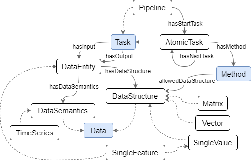

owl:Class entities which are colored with blue: Data, Method, and Task. The Data class includes all concepts related to data, such as DataSemantics, which describes the meaning of data, and DataStructure, which specifies the format of data e.g., a TimeSeries has the format Array. The Method class includes algorithms and functions (with allowed input, output, and parameters) that operate on data. The Task class has two sub-classes: AtomicTask and Pipeline. The first one defines the pipeline's tasks, that execute the mentioned functions. The second is an ordered series of such tasks that organize the movement of data. In addition to these classes, there are constraints that apply to certain data, such as the requirement that an Array must have a certain number of dimensions.
